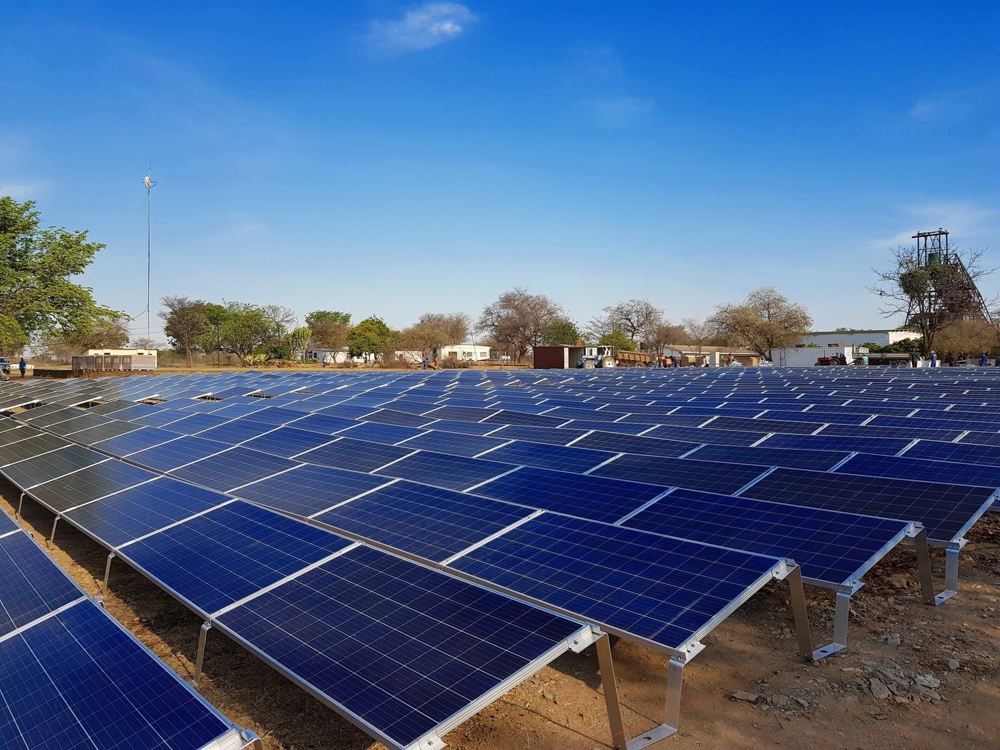

Why Kenya Must Diversify Its Renewable Energy Portfolio

Kenya is already a global leader in renewable energy, with over 90 percent of electricity generated from clean sources. This is a remarkable achievement that few countries can match. However, the composition of this generation mix presents both opportunities and vulnerabilities that demand strategic attention. A closer examination of Kenya's renewable portfolio reveals significant concentration risks, and failing to address these risks proactively could undermine the reliability, affordability, and sustainability of the country's electricity supply in the years ahead.
Kenya's Current Generation Mix
Kenya's electricity generation portfolio is dominated by two technologies. Geothermal energy provides approximately 45 percent of the country's electricity, making Kenya the seventh-largest geothermal producer in the world and the largest in Africa. Hydropower contributes around 35 percent of generation, drawn primarily from the Tana River cascade and Turkwel Gorge. Wind energy, driven by the 310 MW Lake Turkana Wind Power project and the 100 MW Kipeto Wind Farm, contributes approximately 12 percent. Solar energy, including the 50 MW Garissa Solar Plant and numerous commercial and industrial rooftop installations, accounts for roughly 8 percent of generation, though this share is growing rapidly. While Kenya's overall renewable penetration is exceptional, the heavy reliance on just two technologies for 80 percent of generation creates structural vulnerability. A drought that reduces hydropower output by 40 percent, as occurred during the 2016 to 2017 and 2021 to 2022 drought periods, forces the country to rely on expensive emergency diesel generation and imported power, driving up electricity costs for consumers and straining foreign exchange reserves. A prolonged disruption to geothermal output, whether from reservoir depletion, maintenance shutdowns, or geological events, would have an even more severe impact given geothermal's dominant share.
Comparative Analysis of Renewable Technologies
Each renewable technology brings distinct characteristics to the grid, and understanding these differences is essential for effective portfolio design. Geothermal provides stable, constant baseload power with capacity factors of 90 to 95 percent, operating 24 hours a day regardless of weather conditions. It is the backbone of Kenya's grid, but it requires very high upfront capital expenditure, long development timelines of five to ten years, and site-specific geological risk. Hydropower with reservoir storage provides dispatchable capacity that can be ramped up or down to meet demand, but its output is highly seasonal and vulnerable to drought. Climate change projections for East Africa suggest increased frequency and severity of drought cycles, making this vulnerability more acute over time. Wind energy in Kenya benefits from strong and consistent wind speeds in the Rift Valley and northern regions, with capacity factors of 40 to 50 percent that are among the best globally. Wind generation is often strongest at night and during cloudy periods, making it naturally complementary to solar. However, wind output is variable and requires accurate forecasting and flexible grid resources to manage its integration. Solar energy generates during daylight hours, peaking at midday when commercial and industrial demand is highest. Solar is modular, fast to deploy, and has seen dramatic cost reductions, but its output falls to zero at night and is reduced by cloud cover. A well-diversified portfolio leverages these complementary profiles: solar serves daytime peaks, wind provides nighttime generation, hydro offers seasonal flexibility, and geothermal anchors the system with stable baseload.
Grid Stability and the Benefits of Diversification
Diversification is not merely a theoretical risk management concept; it has tangible benefits for grid stability and system cost. When a single technology dominates, the grid operator must maintain larger reserve margins to compensate for that technology's potential unavailability. A diversified portfolio reduces the need for reserve capacity because the probability of simultaneous outages across multiple uncorrelated technologies is much lower than the probability of an outage in a single dominant technology. Diversification also reduces the need for energy storage. When solar and wind are deployed together, their complementary daily and seasonal profiles reduce the depth and duration of net load swings, meaning less storage capacity is required to balance supply and demand. This synergy has been demonstrated in countries that have successfully integrated high shares of variable renewables. Furthermore, diversification reduces curtailment. When wind and solar are deployed in roughly equal proportions, the combined output is smoother and more predictable, reducing the amount of generation that must be curtailed during periods of oversupply. Kenya's current grid infrastructure was designed for a system dominated by geothermal and hydro. As wind and solar shares increase, investment in transmission capacity, grid flexibility, and system operation tools will be needed. A diversified portfolio reduces the scale and cost of these investments by smoothing the net load profile that the grid must accommodate.
International Lessons in Portfolio Diversification
Several countries offer instructive examples of successful renewable energy portfolio diversification. Germany's Energiewende, or energy transition, has achieved a remarkable diversification of renewable sources including wind, solar, biomass, and hydro. Germany's renewable share surpassed 50 percent of electricity generation in 2023, with wind and solar each contributing roughly equal shares and biomass and hydro providing dispatchable flexibility. Germany's experience demonstrates that a balanced portfolio can maintain grid reliability at high renewable penetration levels, provided that transmission infrastructure and market mechanisms keep pace. Denmark has achieved the world's highest wind penetration, with wind power supplying over 50 percent of its electricity, but this is backed by extensive hydro storage in Norway through the Nordic electricity market. Denmark effectively uses Norway's hydro reservoirs as a giant battery, absorbing surplus wind generation and releasing it when needed. California's experience with the duck curve, the sharp mismatch between midday solar surplus and evening demand ramp, illustrates the challenges of over-concentrating in a single variable technology. California now mandates energy storage procurement alongside solar deployment and is actively diversifying into offshore wind and long-duration storage. For Kenya, the key lesson is that diversification should be pursued proactively rather than reactively. Kenya has the advantage of excellent resources across all four major renewable technologies, an advantage that few countries share. Deliberate policy choices today can shape a balanced portfolio that avoids the integration challenges that less endowed countries are struggling to overcome.
Policy Recommendations
Ecotrunk advocates for a deliberate diversification strategy embedded in Kenya's national energy planning frameworks. We recommend that the Ministry of Energy and Petroleum, in consultation with EPRA and the Kenya Electricity Grid Code, establish target ranges for each technology's share in the national generation mix. These ranges could specify, for example, that no single technology should exceed 40 percent of annual generation, that combined variable renewable sources should not fall below 20 percent, and that dispatchable renewable capacity should maintain at least 25 percent of peak demand. Such targets would guide investment decisions, grid planning, and tariff policy towards an optimally balanced portfolio. Complementing these targets, Kenya should invest in transmission infrastructure that enables geographic and technological diversification, including the planned Kenya-Ethiopia interconnection and upgrades to the western and coastal transmission corridors. Coordinated planning across generation, transmission, and distribution is essential: adding wind capacity in the north is only valuable if transmission capacity exists to deliver that power to load centres in Nairobi, Mombasa, and Kisumu. Finally, Kenya should develop market mechanisms that appropriately value the grid services provided by different technologies: firm capacity, flexibility, inertia, and voltage support. A well-designed market sends price signals that guide investment towards the technologies that the system needs most. Kenya has all the natural resources, technical capability, and policy tools needed to build one of the world's most balanced, resilient, and affordable renewable energy systems. The time to act on diversification is now.